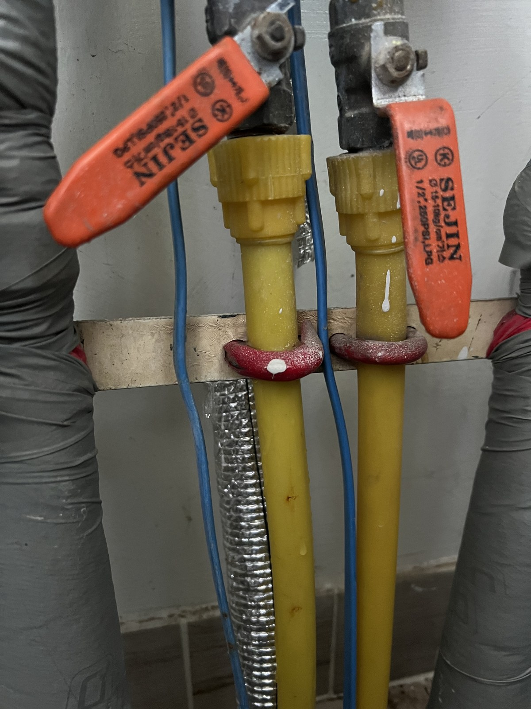
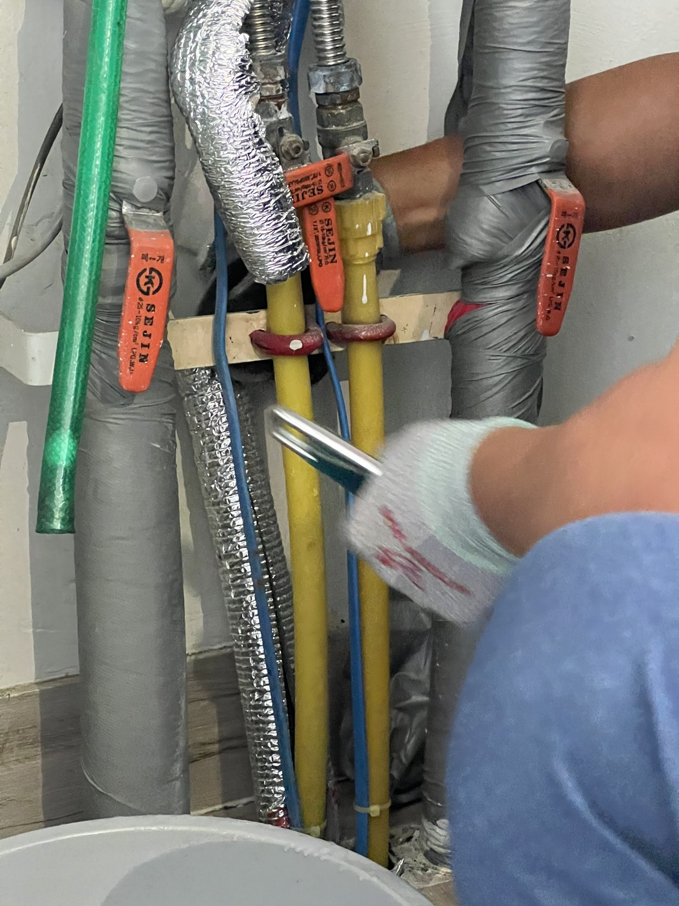
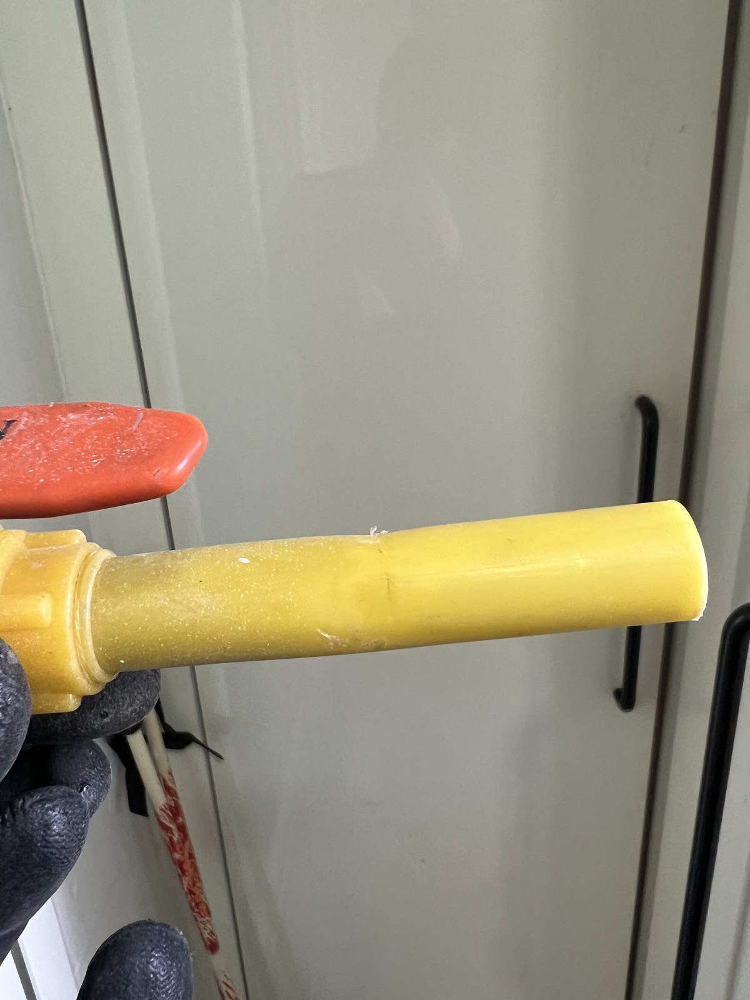
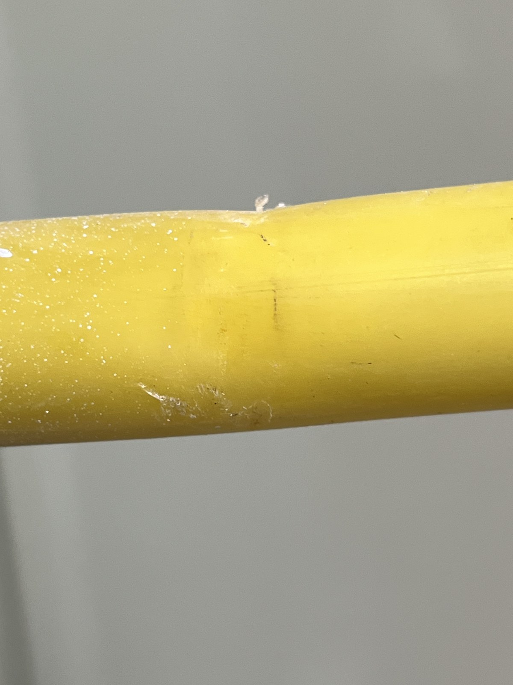
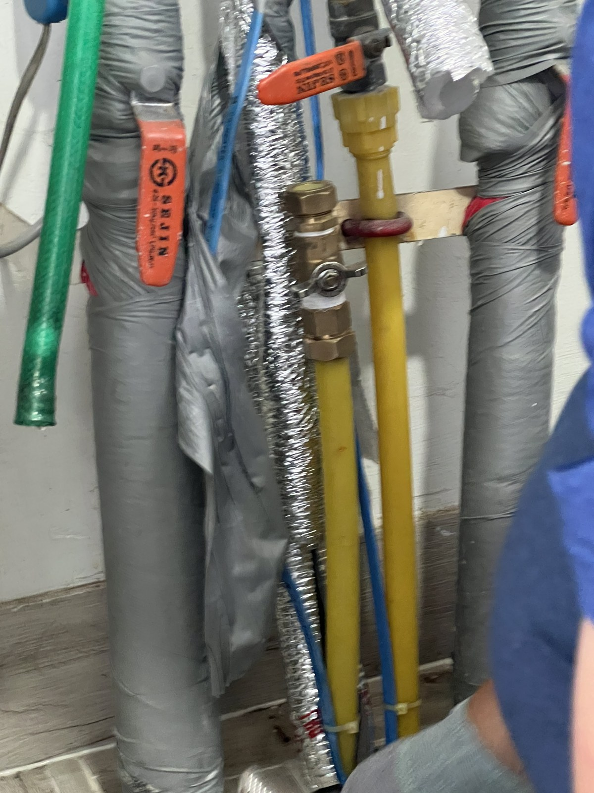
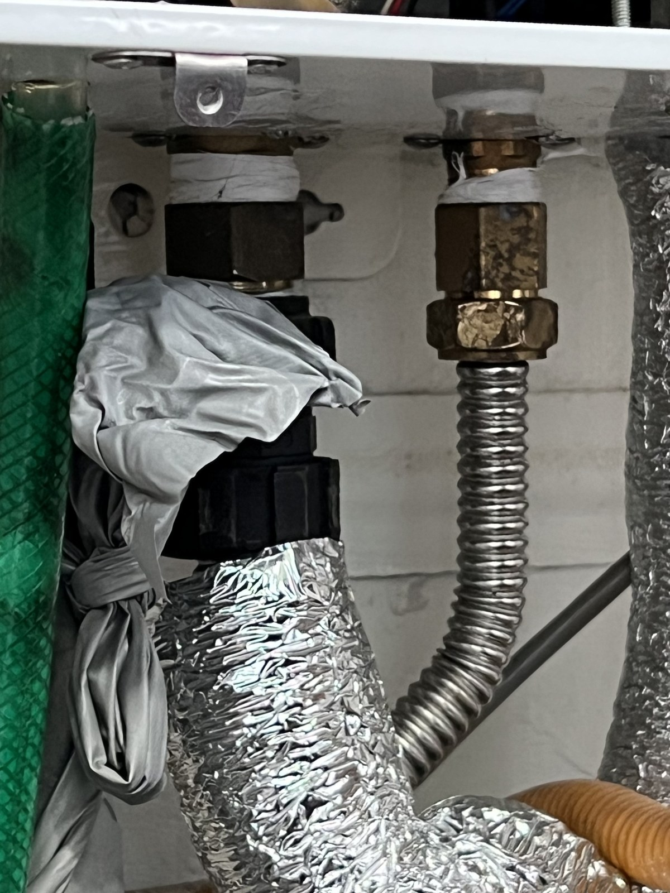
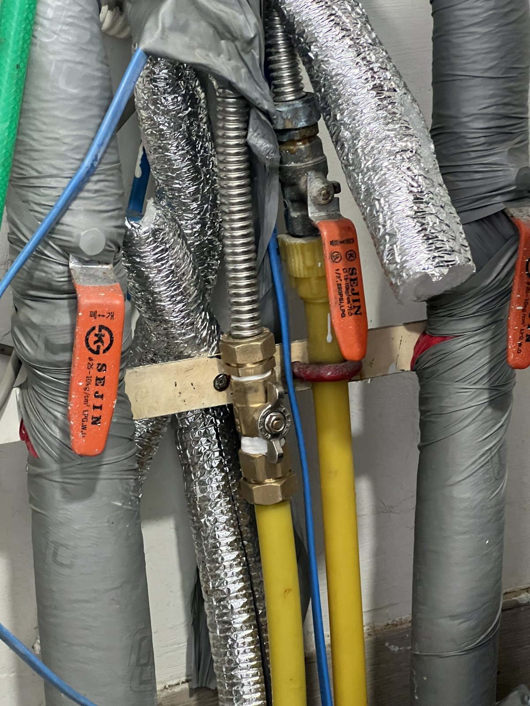

대전 보일러 배관 누수 보수｜선비마을 배관 교체와 보온 마감

현장 작업 한눈에 보기
- 현장
- 대전 선비마을아파트
- 문제
- 보일러 아래 배관 누수
기존 관과 연결부 확인 - 작업
- 기존 관 분리·새 관 연결
연결 부속 설치·보온 마감 - 결과
- 재연결·보온 마감 사진 확인
누수시험 결과·총 소요시간 미확인
대전 선비마을아파트에서 보일러 아래 배관을 보수했습니다. 기존 관 분리, 새 금속 주름관·연결 부속 설치, 보온 마감까지의 작업 범위를 사진으로 소개합니다. 보일러 본체 교체 사례는 아닙니다.
보일러 본체가 아닌 아래쪽 배관을 보수한 현장
대전 선비마을아파트에서 보일러 아래 배관 누수 보수 작업을 진행했습니다. 2026년 9월 29일 사진에는 보온재 사이로 기존 노란색 관과 밸브가 드러나 있습니다.
이번 공정은 기존 관을 분리하고 새 관·연결 부속을 설치한 뒤 보온재로 마감하는 작업입니다. 보일러 본체 교체나 앞서 소개한 선비마을 천장 배관 작업과는 구분됩니다.

연결 부속을 풀어 기존 관 분리
기존 관 위쪽의 연결 부속에 공구를 대고 분리하는 장면입니다. 주변 배관이 함께 보이므로 어느 위치의 관을 손보는지 따라갈 수 있습니다.
보온재 겉면만 보던 상태에서 연결부와 관 자체가 드러나는 단계입니다.

분리한 기존 관과 교체 구간
분리한 노란색 관의 전체 모습입니다. 기존 연결 부속 아래로 이어졌던 구간과 표면 상태를 확인할 수 있습니다.
뒤에 나오는 새 관 사진과 비교하면 이번에 손본 배관 구간을 구분하기 쉽습니다. 건물 전체 배관을 교체한 작업으로 확대해 설명하지 않습니다.

관 표면의 흔적과 원인 판단은 구분합니다
관 표면을 따라 선 모양의 흔적이 보입니다. 가까운 사진은 상태를 살펴보는 자료이지만, 이것만으로 손상 깊이나 정확한 발생 원인을 확정할 수는 없습니다.
이번 사례는 확인된 교체 범위와 시공 과정에 초점을 맞췄습니다.

새 관과 중간 연결 부속 설치
기존 관이 있던 라인에 금속 주름관과 연결 부속을 설치한 모습입니다. 밸브 손잡이와 고정대 위치를 함께 보면 새 관이 이어진 경로를 확인할 수 있습니다.

새 관이 보일러 하부로 이어지는 위치
새 금속 주름관이 보일러 아래로 연결되는 지점입니다. 중간 연결부 사진과 함께 보면 관이 이어진 범위를 구분할 수 있습니다.
상담 시에도 보일러 전체와 아래쪽 배관을 함께 보여주시면 본체 주변과 외부 연결 배관 중 어느 부분을 확인해야 하는지 이야기하기 좋습니다.

보온재를 덮기 전 연결 상태
보온재로 가리기 전 중간 연결부와 관의 배치를 다시 남겼습니다. 마감 후에는 보이지 않는 부속이므로 이 단계의 사진이 작업 이력을 확인하는 자료가 됩니다.

보온 마감까지의 결과와 상담 준비
새로 연결한 배관을 보온재로 감싼 상태입니다. 이번 사례에서 확인되는 시공 범위는 배관 재연결과 보온 마감까지입니다.
누수시험 결과와 정확한 누수 원인, 총 작업시간은 자료에 없어 확정하지 않습니다. 비슷한 증상이 있으면 젖은 위치와 발생 시점을 남겨 주세요. 직접 부속을 풀지 말고 아래 상담 경로로 문의해 주세요.